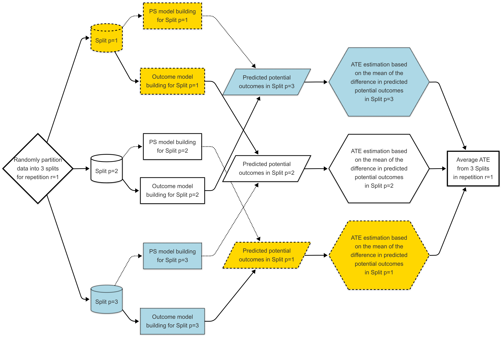
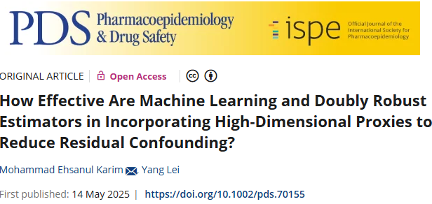
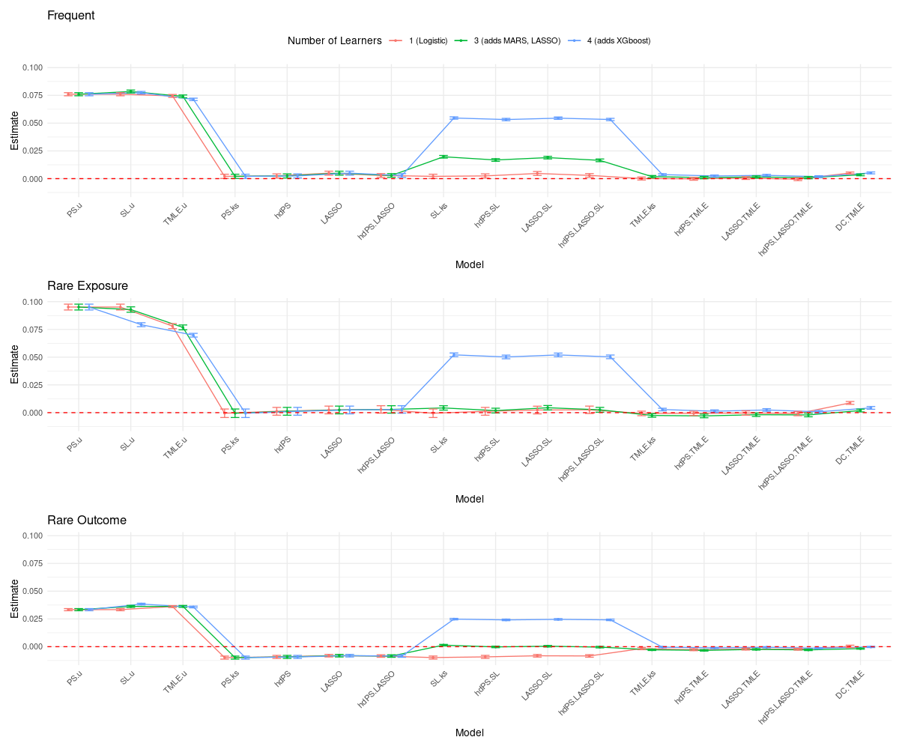
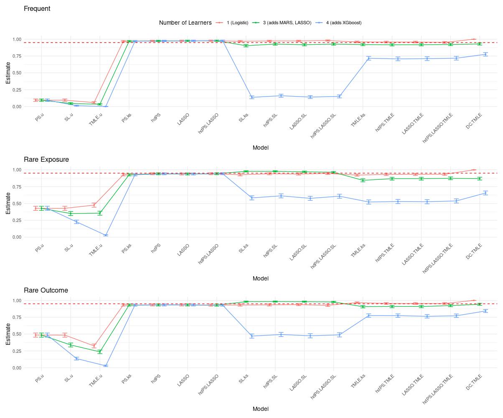

19 DC-TMLE
Double Cross-Fit TMLE (DC-TMLE) (Mondol and Karim 2024; M. Karim and Mondol 2025) is an extension of TMLE designed to improve robustness and reduce overfitting when using flexible, high-dimensional or machine learning-based models. It works by splitting the data into multiple folds, training nuisance models (e.g., the propensity score and outcome regressions) on one subset, and then evaluating the targeted update and parameter estimation on another. This sample-splitting (cross-fitting) procedure helps ensure that the estimation step is not biased by the same data used to fit the nuisance models. This process of sample-splitting and estimation is repeated, and the results are averaged to produce a final, stable estimate. DC-TMLE maintains double robustness, meaning it remains consistent if either the treatment or outcome model is correctly specified, and it provides valid statistical inference even in high-dimensional settings where traditional TMLE may be unstable.
19.1 Background
Residual confounding remains a persistent challenge in observational studies, particularly with high-dimensional data (M. E. Karim and Lei 2025). Recent work evaluates traditional and machine learning-based extensions of hdPS methods, including Super Learner (SL), TMLE, and Double Cross-Fit TMLE (DC-TMLE).
Tip

19.2 Simulation Design
| Element | Details |
|---|---|
| Data Source | NHANES 2013–2018 |
| Sample Size | 3,000 per iteration |
| Iterations | 500 |
| Exposure/Outcome Prevalence | 3 scenarios: (i) Frequent-Frequent, (ii) Rare-Frequent, (iii) Frequent-Rare |
| True Effect | OR = 1 (null); RD = 0 |
| Proxies | 142 medication variables; 94 outcome-associated proxies and 48 noise variables |
| Confounding Simulation | Used proxy-derived comorbidity index and complex transformations to mimic unmeasured confounding |
19.3 Methods Compared
| Method Group | Method | Description |
|---|---|---|
| TMLE Methods with Proxies | TMLE.ks, hdPS.TMLE, LASSO.TMLE, hdPS.LASSO.TMLE | TMLE with various proxy selection strategies |
| DC.TMLE | Double cross-fit TMLE | |
| Super Learner Methods with Proxies | hdPS.SL, LASSO.SL, hdPS.LASSO.SL, SL.ks | Super Learner with proxy selection options |
| Standard Methods with Proxies | PS.ks, hdPS, LASSO, hdPS.LASSO | Propensity score and outcome models with proxy inclusion |
| No Proxy Methods | TMLE.u, SL.u, PS.u | Only measured covariates, no proxies |
Super Learner libraries included:
- 1-learner: Logistic regression
- 3-learners: Logistic regression, LASSO, MARS
- 4-learners: Above + XGBoost (non-Donsker)
19.4 Simulation Results


Results are fully accessible via a Shiny app:
👉 Interactive Causal Benchmark App
Explore bias, SEs, and coverage metrics across methods and simulation conditions.
19.5 Conclusion
- Simpler models with structured proxy inclusion (hdPS, LASSO) remain competitive and stable.
- TMLE is effective for bias reduction but suffers under high-dimensional instability with complex libraries.
- SL performance is library-sensitive; 1- and 3-learner libraries performed best. Complex learners (e.g., XGBoost) should be used cautiously.